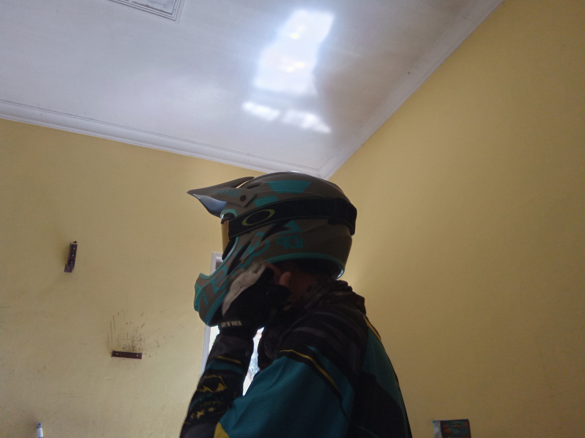

Hobi
Motorcycling: Saya sangat suka bermain motor dan terkadang saya membeli part untuk memodifikasi motor saya.
d.png)
Berolahraga: Jika ada waktu luang terkadang saya berolahraga seperti bersepeda ataupun joging sendiri.
